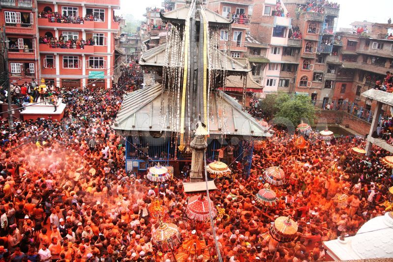

Bisket Jatra

As we know Newars Community of Nepal are rich in Traditions,Culture and Festivals.
Among many festivals,Bisket Jatra is the most spectacular and colorful festival celebrated by the peoples of Newar community in Madhyapur Thimi,Bhaktapur.The word Bisket is originated from the word"BISHWO-KETU".It is also known as Sindur Jatra.The festival welcomes the Nepali New Year"Bikram Sambat" and marks the arrival of spring season.
During the festival, devotees gather and take out a procession carrying 32 khath (palanquins) containing the idols of several Hindu gods and goddesses and Chilakh(Oil-Lamp) in hands across the town square. People smear and throw each other with Sindur(orange vermillion powder) and sing and dance to the tune of Dhimey Baja,Naye Khi(traditional musical Instruments) during the procession.People worship god and sacrifice hen in temple.People enjoy having feast and drinking Tho(Rice beer).
Bisket Jatra Photo Gallery